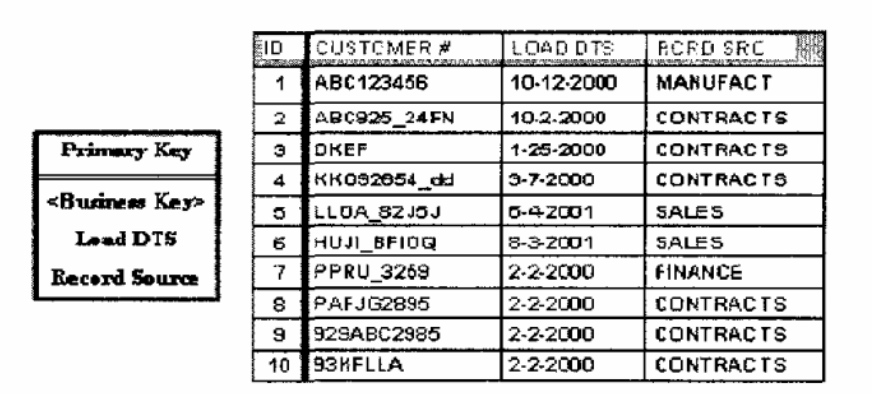
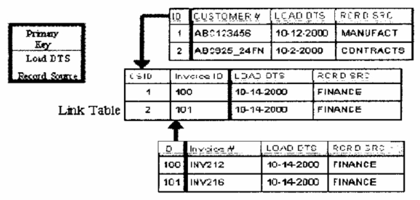
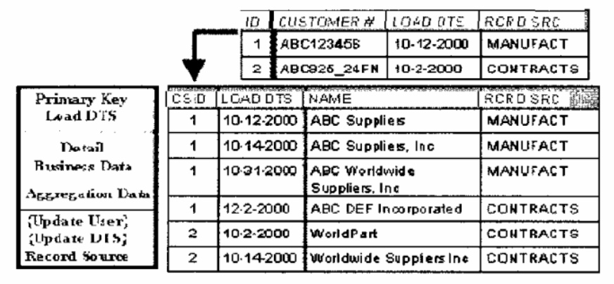
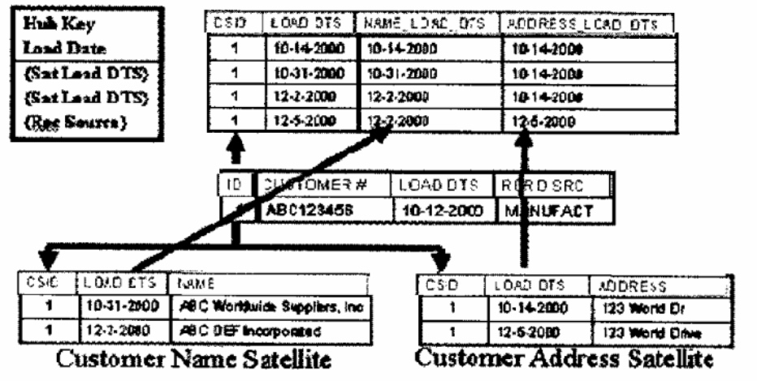
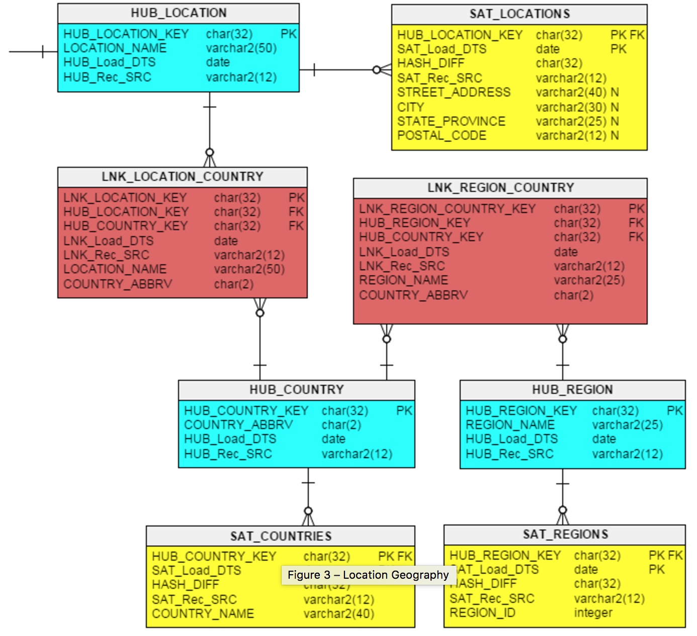
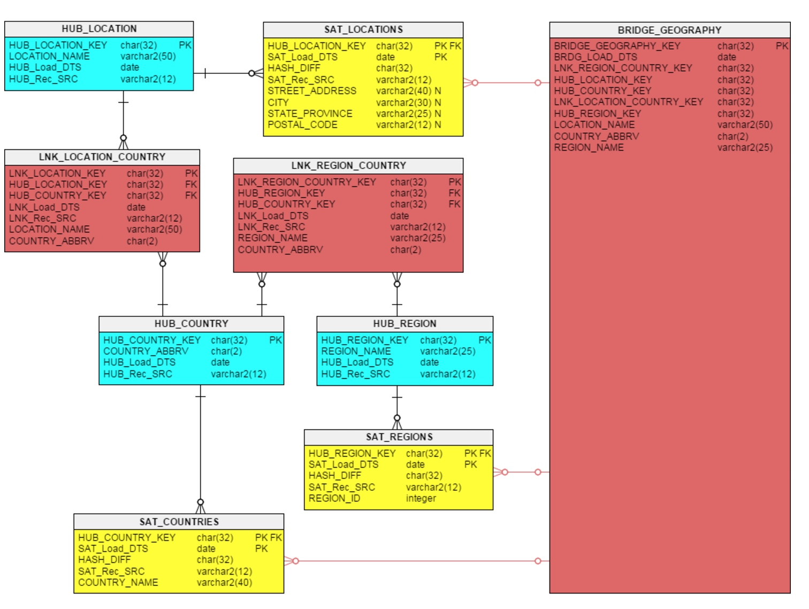

Data Vault被视为新一代的数据仓库技术，还是得到广泛的关注的。它综合了ER模型和Star Schema模型的一些优点，也克服了一些缺点。最近花了点时间学习了Data Vault模型，所以有了这篇文章。
Data Vault的定义
Data Vault是一个面向细节，追踪历史的，由一些规范化数据表组成的唯一的关联表集，用来支持一个或者多个业务功能域。
Data Vault模型用来架构一个企业级数据仓库(EDW),而不是数据集市。在某种程度上与Inmmon的原子数据仓库有点相似。
Data Vault的组件
Data Vault 主要有Hub，Link，Satellite三个组成。它主要围绕业务功能域，以原子的业务实体逐步展开，进而扩充到整个数据仓库范围。其中Hub代表业务的实体主键，Link在Hub之间提供业务实体之间的业务关联与交易，而Satellite则提供Hub和Link的上下文描述信息。
Hub
Hub是一个单个的数据表，是一个仅仅包含了简单的业务实体键值的列表，比如员工id，商品id等。如果这些实体键值丢失，那么该业务实体的上下文描述信息也会丢失。它主要包含以下的属性：
- 代理键 (Surrogate Key)。一个跟业务无关的键值或者序列号。
- 业务主键 (Business Key)。 业务主键，唯一性。
- 数据装载时间 (Load Data)。记录该业务键被加载的时间。
- 记录源 (Record Source)。记录该业务键的来源，用来做数据源追踪之用。

上图为一个Customer Hub。ID 为代理键，CUSTOMER是主键, LOAD_DTS是数据装载时间，RCRD_SRC是记录源。
Link
Link是一个多对多的3NF表，在两个或者多个业务实体之间，LINK表示业务实体HUB之间的业务关联或者交易。他主要包含以下的属性：
- 代理键 (Surrogate Key)。一个跟业务无关的键值或者序列号。如果有多个Hub的主键加入，可以考虑使用代理键。
- Hub1...Hubn 的主键。 多个与该Link相关的Hub的主键伸入到Link中来表示Hub之间的业务关系。
- 数据装载时间 (Load Data)。记录该业务键被加载的时间。
- 记录源 (Record Source)。记录该业务键的来源，用来做数据源追踪之用。

上图中，中间表为Link表，上下两个Hub表(Hub_Customer和Hub_invoice)，Hub_Customer和Hub_invoice的ID分别对应Link表的CSID和INVOICE ID
Satellite
Satellite是关于Hub或者Link的上下文描述信息。这些信息有可能随着时间发生变化。因此，Satellite不仅能存储新的数据，而且还要包含变化前的数据。它主要包含:
- Satellite主键。Hub或者Link的主键伸入到Satellite作为主键。
- Satellite主键。数据装载时间(Load Date) 描述该信息在数据仓库的装载时间，也就是什么时候起有效。为了保存历史数据，该属性也作为了主键的一部分。有时候会与End Date(时效时间)一起用。
- 数据装载时间 (Load Data)。记录该业务键被加载的时间。
- 记录源 (Record Source)。记录该业务键的来源，用来做数据源追踪之用。

Satellite类似与Star Schema模型的第二类缓慢变化维，保证了粒度级别的增量数据，用来为相应的Hub或者Link提供上下文描述信息。
上图中可以看出，上表是Hub_CUSTOMER, 下表是Satellite_Customer,CS_ID和LOAD_DTS成为Satellite_Customer的主键。CS_ID为1的多个行对应了Hub_CUSTOMER的一个CUSTOMER ID.
Point In Time 辅助表
如果一个Hub有多个Satellite，通常需要一个Point In Time辅助表来协助同步多个Satellite的不同时间版本上下文信息。

上图中，Customer Name Satellite和Customer Address Satellite的数据缓慢变化是没有同步对应的，比如Name Satellite的哪条CSID=1 和 Address Satellite的哪条CSID=1是同一时刻的数据。这时就建立了最上面的这张PID表，新建NAME_LOAD_DTS和ADDRESS_LOAD_DTS字段来对Name Satellite和Address Satellite进行对应，实现时间同步。如此之后，Name Satellite和Address Satellite就变得有序了。
Data Vault的参考原则
关于Hub的原则
- Hue的主键不能够直接深入到其他Hub里面。也就是说，不存在父子关系的Hub。各个Hub之间的关系是平等的。这就是Data Vault能保持灵活性和扩展性的关键。
- Hub之间必须通过Link相关联，通过Link可以连接多个Hub。
- 必须至少有两个Hub才能产生一个有意义的Link。
- Hub的键总是伸出去的(到Link或者Satellite)。
关于Link的原则
- Link可以跟其他Link相关联
- Hub和Link都可以使用代理键，Satellite不适用代理键。
- 业务主键从来不会改变，就是说Hub的主键不会改变。
- Link可能包含代理键。
关于Satellite的原则
- Satellite必须是连接到Link或者Hub上才有确定的含义。
- Satellite必须包含装载时间Load_DTS, 从而包含历史数据，并且没有重复的数据。
- 由于数据信息的类型或者变化频率快慢的差别，描述信息数据可能会被分割开到多个Satellite之中去。
一些优化
在《Data Vault Series》系列中，提到了Business Data Vault (数据)，他在Data Vault 的基础上 增加了一些优化来快速解决join的问题，比如 Bridge Tables.
如果是Data Vault 设计就是一下这个图，

建立Bridge Table之后就是

有了Bridge Table之后，我们可以少join需要表。详细内容见文章《Data Vault Series (4)》
Data Vault 2.0
相比于Data Vault 1.0， Data Vault 2.0 给出了完整的数仓建设结构，他使用了实时和离线结合，使用了NOSQL数据库。不过，体系结构超出了本文范围。本文主要介绍Data Vault 2.0建模方法论上的新加功能。
Data Vault 2.0 模型最大的变化就是将Hub Link的主键由Integer型变化为Hash Key，一般是经过MD5处理。作者认为经过Hash key处理后，主键的长度固定，因此在进行Hub Link Satellite进行关联时候能起到性能优化。但是我并不认同这个观念。
数据集市
一般使用Data Vault构建企业的原子数据仓库，之后在上面用星型模型构建企业数据集市，这里就涉及到将Data Vault转星型模型，我们可以看这篇文章《Data Vault Series (4)》
总结
Data Vault 是个很灵活的敏捷建模方法。它解决部分ER模型和星型模型的缺点。但是同样引进了新的问题，大量的Hub Link Satellite的存在，使得join操作特别多，当数据量巨大时候，join操作往往是最费时间的。因此，对于Data Vault模型应用于大数据领域的效果，我们有待考察。
本文简要介绍了Data Vault的模型，更多的例子和深入的内容请看参考文献的《Data Vault Series》系列文章。
参考文献
- 下一代数据仓库模型Data Vault的研究及其应用
- Data Vault Series (2) Data Vault 2.0 Modeling Basics
- Data Vault Series (1) Agile Modeling: Not an Option Anymore
- Data Vault Series (3) The Business Data Vault
- Data Vault Series (4) Building an Information Mart With Your Data Vault